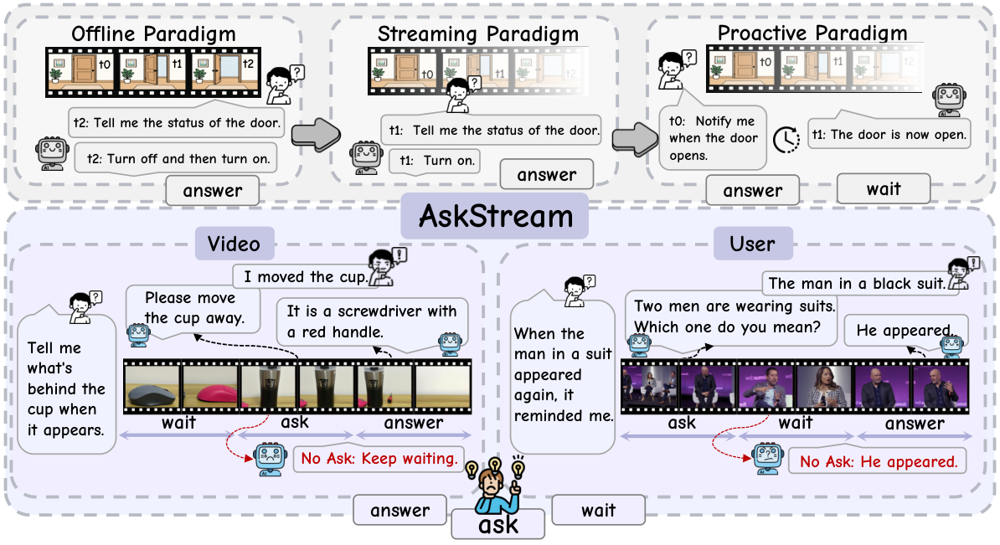
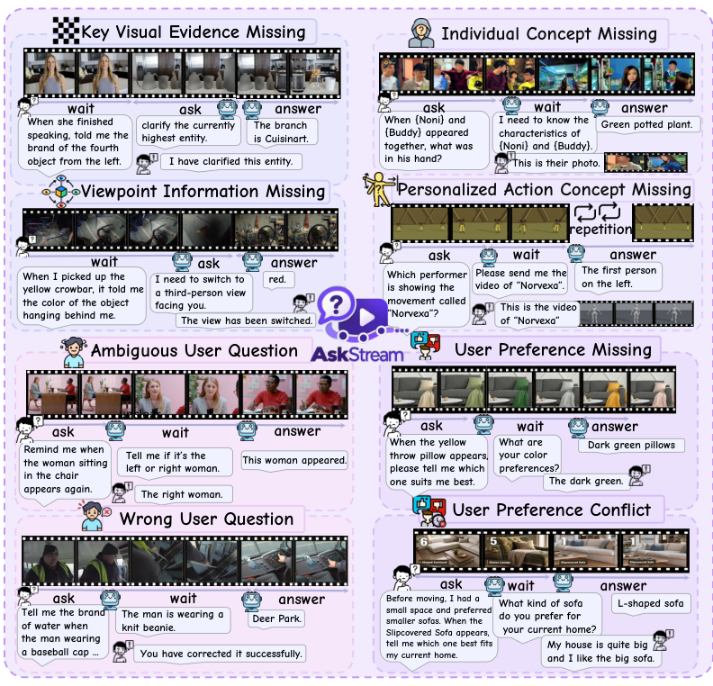
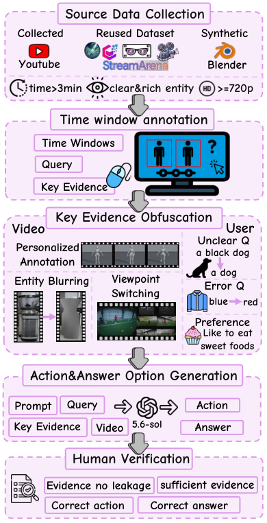
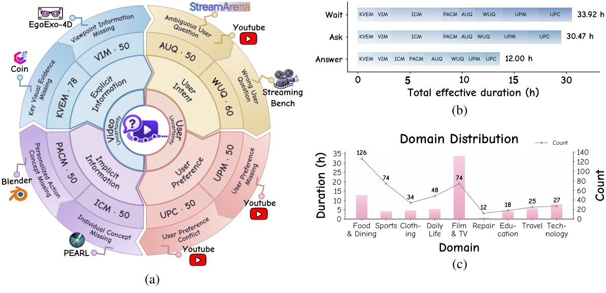
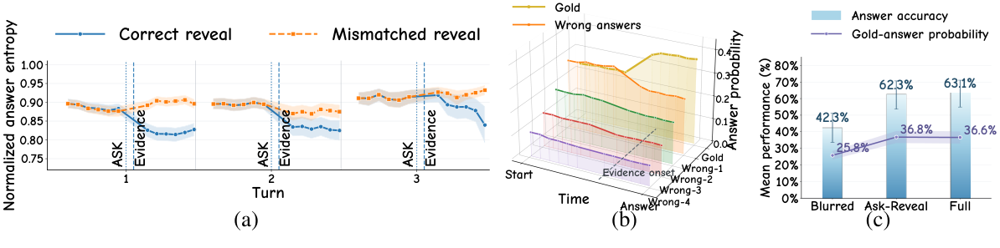
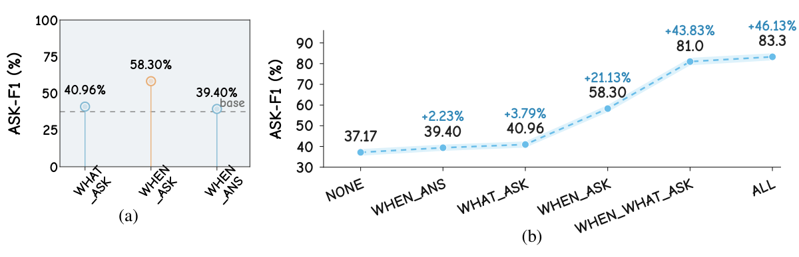
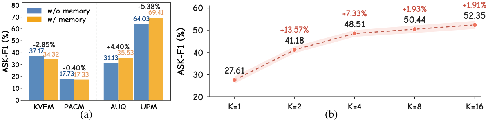

AskStream: When and What to Ask Proactively under Uncertainty in Streaming Video Understanding
1The Key Laboratory of Cognition and Decision Intelligence for Complex Systems,
Institute of Automation, Chinese Academy of Sciences, Beijing, China
2Beijing Academy of Artificial Intelligence (BAAI), Beijing, China
3Hunan Normal University, China 4Minzu University of China, Beijing, China
Abstract
Recent advances in multimodal large language models have increased interest in interaction paradigms for video understanding. The evolution from offline to streaming and proactive interaction has gradually shifted models from passive responders toward more proactive agents that can decide when to answer. However, existing proactive paradigms typically assume that the information required to answer a query is complete, leaving models to only wait or answer. In the real world, however, information is often incomplete due to uncertainty from either the video or the user. In proactive paradigms, such uncertainty can cause the model to wait forever or generate highly hallucinatory responses. We therefore argue that proactive interaction should be redefined with a third action: ask, allowing models to actively ask for missing information. To study when and what models should ask before answering, we introduce AskStream, the first multi-turn benchmark spanning video and user uncertainty for streaming video understanding, with four task categories and eight subtasks. It contains 438 videos with 2,714 manually annotated frame-level time windows across three types: wait, ask, and answer. Across both multiple-choice and open-ended settings, even the strongest model attains only 52.18% on our proposed Ask-F1 metric, highlighting substantial limitations in proactive information seeking under uncertainty.
💡 Can your model recognize uncertainty, ask for the missing information, and answer at the right time?
Leaderboard
Evaluating when and what to ask, and when to answer.
Results from the paper. All subtask scores are Ask-F1 (%); higher is better.
Sorted by overall Ask-F1. Select a column heading to sort.
| # | Model | Video uncertainty | User uncertainty | Overall metrics | ||||||||
|---|---|---|---|---|---|---|---|---|---|---|---|---|
| Explicit | Implicit | Intent | Preference | |||||||||
Sask and Sans measure timing-aware asking and answering. Ask-F1 is their harmonic mean. Offline models use StreamHarness; native streaming models use their own memory mechanisms.
Benchmark Introduction
From passive responses to proactive information seeking.
Existing proactive video models choose between waiting and answering. When visual evidence is missing or a user's intent is unclear, neither action can resolve the uncertainty. AskStream introduces a third action, ask, so models can request the information they need before answering.

Observe the stream. Resolve the uncertainty. Respond with sufficient evidence.
Video and User Uncertainty
Two sources of uncertainty. Four task categories. Eight subtasks.

Video uncertainty
Explicit information
Key Visual Evidence Missing (KVEM)
Viewpoint Information Missing (VIM)
Implicit information
Individual Concept Missing (ICM)
Personalized Action Concept Missing (PACM)
User uncertainty
User intent
Ambiguous User Question (AUQ)
Wrong User Question (WUQ)
User preference
User Preference Missing (UPM)
User Preference Conflict (UPC)
Benchmark Construction Pipeline

Source data collection
Collect videos from YouTube and existing datasets, and synthesize additional videos using Blender.
Time window annotation
Manually annotate queries, key entities, evidence, and frame-level temporal windows.
Key evidence obfuscation
Mask visual evidence, switch viewpoints, or withhold concepts, intent, and preferences.
Action & answer option generation
Generate candidate actions and answers for each interaction event.
Human verification
Verify that the missing information is necessary, the revealed evidence is sufficient, and each candidate set has one correct option.
Data Statistics

AskStream Examples
Key Visual Evidence Missing
QueryTell me what's behind the cup when it appears.
AskPlease move the cup away.
UserI moved the cup.
AnswerIt is a screwdriver with a red handle.
Ambiguous User Question
QueryRemind me when the man in a suit appears again.
AskTwo men are wearing suits. Which one do you mean?
UserThe man in a black suit.
AnswerHe appeared.
Analysis
Asking for the right evidence reduces uncertainty

When and what to ask remain major bottlenecks

Contextual memory and additional asking opportunities

StreamHarness
Dense recent observations, compressed historical context.
Our hierarchical memory framework retains the most recent 10 frames at 1 fps, summarizes every 10 frames into a mid-term memory, and consolidates every four mid-term memories into a long-term block. Up to eight long-term blocks preserve earlier context. Models choose an action once per second, using only information observed so far.
| Context strategy | Sask | Sans | Ask-F1 |
|---|---|---|---|
| StreamHarness | 44.63 | 62.80 | 52.18 |
| Sliding window | 35.92 | 49.71 | 41.70 |
| Uniform sampling (128 frames) | 22.41 | 33.08 | 26.72 |
| Uniform sampling (64 frames) | 13.86 | 21.94 | 16.99 |
BibTeX
@misc{wang2027askstream,
title={AskStream: When and What to Ask Proactively under
Uncertainty in Streaming Video Understanding},
author={Lu Wang and Zhuoran Jin and Longxiang Wang and
Junhong Chen and Yupu Hao and Yao Xu and Daojian Zeng and
Yubo Chen and Kang Liu and Guang Liu and Jun Zhao},
year={2027},
howpublished={\url{https://github.com/wanglu-cs/AskStream}}
}